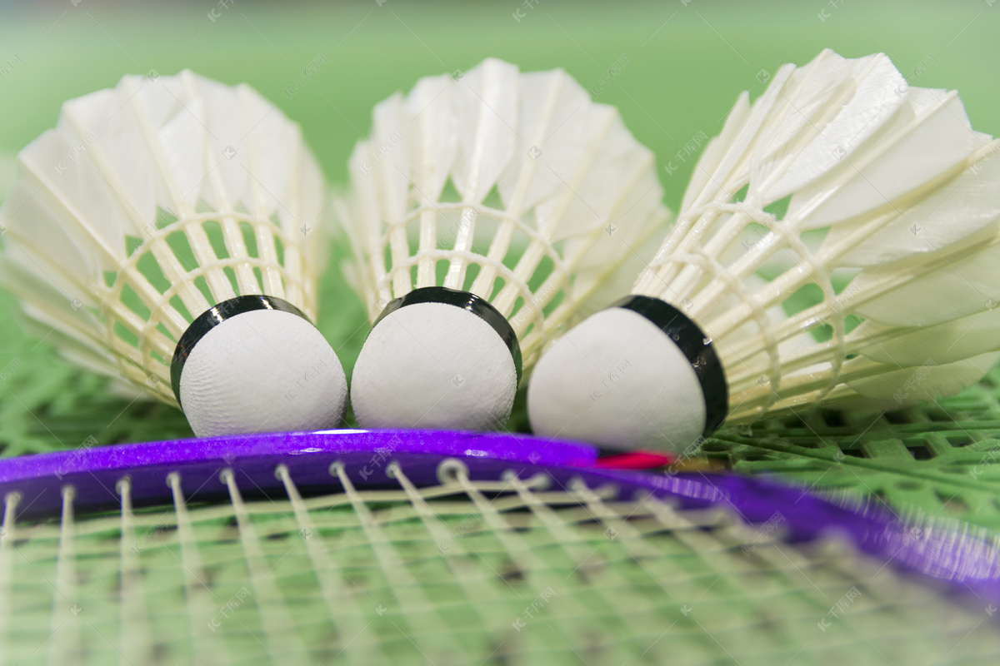
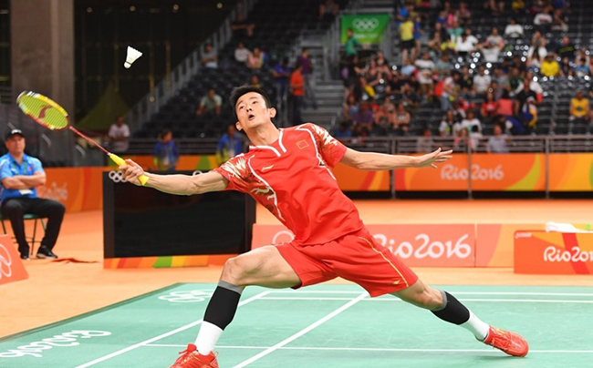
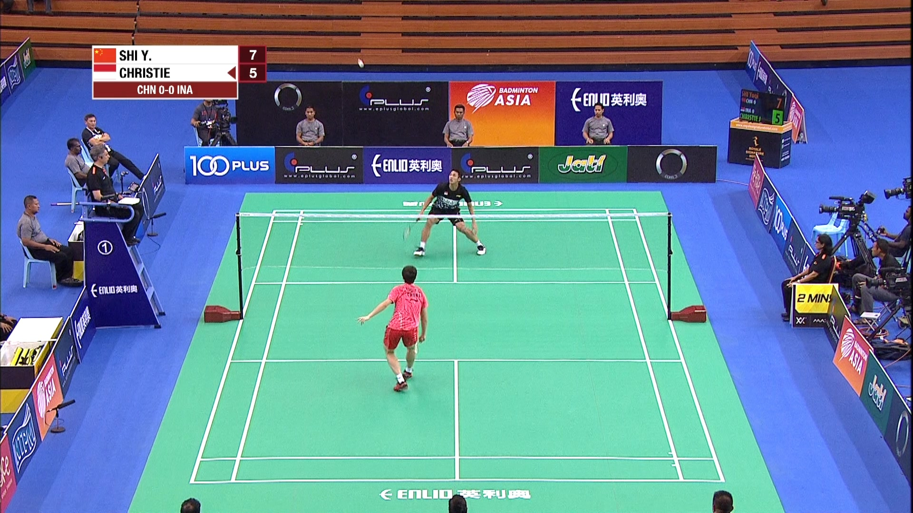
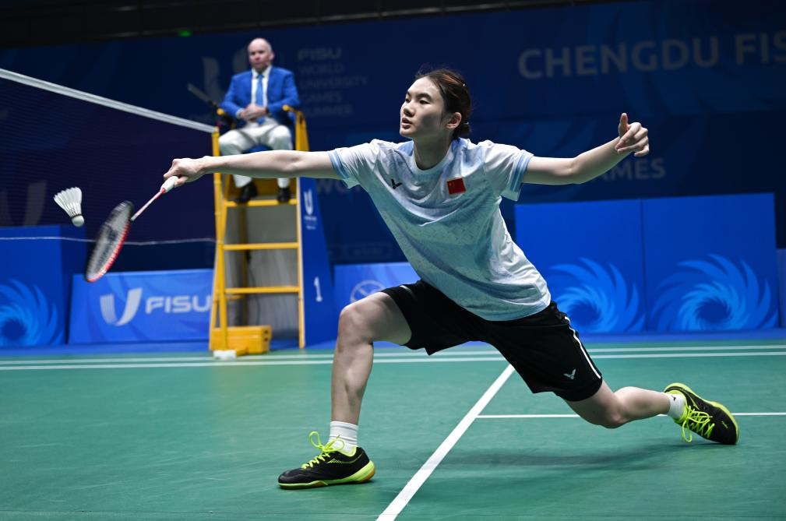
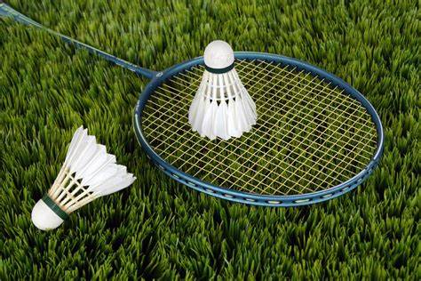

羽毛球简介

羽毛球运动起源于 19 世纪中叶的英国。相传在印度的普那，有一个类似羽毛球玩法的游戏，它用圆形硬纸板和羽毛做成球，两个人隔着一定距离，用木板来回击打，当时被称作 “普那游戏”。后来，英国的军官把它带回英国，并不断改进规则和器材，逐渐演变成现代的羽毛球运动。
1873 年，英国格拉斯哥郡的伯明顿庄园举办了一场公开表演，之后这项运动便以该庄园的名称 “伯明顿（Badminton）” 命名，这就是羽毛球英文名称的由来。
1893 年，英国的 14 个羽毛球俱乐部组成了世界上第一个羽毛球协会 —— 英国羽毛球协会，并于 1899 年举办了首届全英羽毛球锦标赛，这是现代羽毛球运动最早的赛事之一，此后羽毛球运动在英国以及欧洲其他国家迅速发展起来。
20 世纪初，羽毛球运动传播到亚洲、美洲、大洋洲等地区，在不同国家落地生根，深受大众喜爱。1934 年，国际羽毛球联合会（现名为羽毛球世界联合会，简称 BWF）成立，这标志着羽毛球运动开始走向国际化、规范化，国际间的赛事交流也日益频繁。
羽毛球相关图片展示



